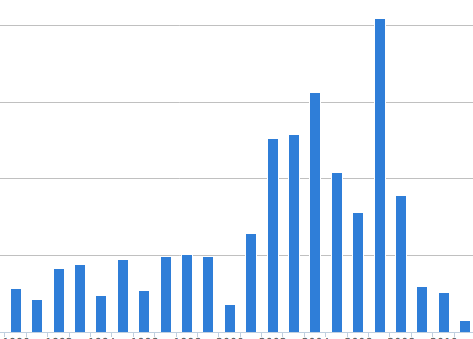
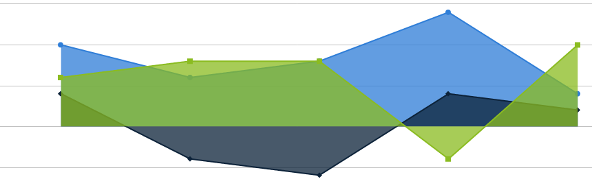
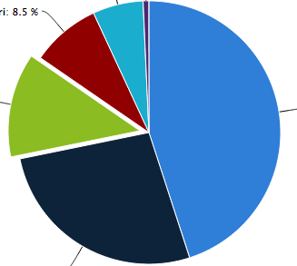

Welcome to VisFig! Simple and sleek way to reproduce other's figure using your own datasets.
All you need is the URL to your dataset and you'r ready to go! Select a visualisation, pop in a link to your dataset, and generate beautiful interactive graphs.
Visualisation |
Data Description |
|---|---|
Bar Chart |
On-screen movie kill counts for hundreds of filmsOriginal dataset from: Olson, Randy (2013): On-screen movie kill counts for hundreds of films. figshare. http://dx.doi.org/10.6084/m9.figshare.889719 |
Area Charts |
Browser market shares t a specific website, 2010Original plot and dataset from HighCharts. Have other marketing and performance data and want to visualise it? Try out VisFig and get the area chart as pretty as this one. |
Chart Diagram |
Original plot and dataset from HighCharts. Have other marketing and performance dataand want to visualise it? Try out VisFig and get the area chartas\ prettyas thisone. |